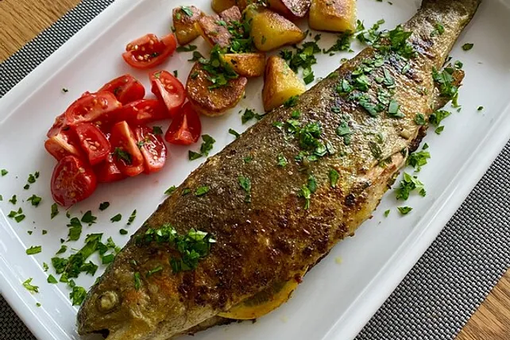

Forelle Müllerin

Zutaten für 4 Portionen
- 4 Forelle(n)
- 2 Zitrone(n), der Saft davon
- 80 g Mehl
- Butterschmalz
- n. B. Kräuter der Saison, gehackte
- 2,5 Prisen Paprikapulver
- 1,3 Prise(n) Pfeffer, weißer
- etwas Wasser
- etwas (Tee)butter
Zubereitung
|
|
Arbeitszeit ca. 15 Minuten |
|
|
Gesamtzeit ca. 15 Minuten |
- Die Forellen innen und außen mit Salz und Pfeffer würzen, innen mit Zitronensaft beträufeln und mit gehackten Kräutern der Saison füllen.
- In Mehl wenden und sofort (!) in ausgelassenem Butterschmalz anbraten.
- Nach 2-3 Minuten (bzw. wenn die Forellen Farbe angenommen haben) wenden, etwas Teebutter dazugeben und zugedeckt ca. 5 Min. durchziehen lassen.
- Aus der Pfanne nehmen und sofort mit passenden Beilagen servieren. Beim Anrichten die restliche Butter über den Fisch geben.
- Als Beilage passen Petersilienkartoffeln oder Dillkartoffeln.
Tipps: Die Forelle sofort nach dem melieren anbraten, da nasses Mehl keine Farbe abgibt.